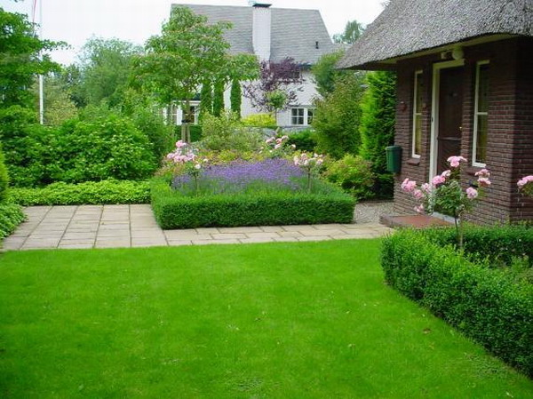

|
Участок в саду, засеянный низкорослыми растениями или злаковыми называется газоном.
Газон является важнейшим элементом любого сада. Его сочный зеленый ковер служит фоном для цветковых композиций, деревьев, кустарников, содействуя выделению их формы и окраски. Он также делает структуру сада более легкой, визуально раскрывает границы, создает ощущение пространства, связывает все элементы сада в одно целое.
Хороший, свежо-зеленый газон - важный элемент садовой технологии. Сам его цвет ласкает взгляд, а мягкий травяной ковер привлекает к отдыху. Травяной покров, ухоженный и густой, содействует улучшению микроклиматических условий. Газон положительно влияет на здоровье. В самый знойный день температура воздуха над газоном на 4 - 5 градусов ниже, а влажность - процентов на 15 выше. Ухоженный и хороший газон - это не только эстетично и элегантно, а и полезно для нервной системы. Зеленый цвет благополучно влияет на нервную систему человека.
Виды газона:
Партерный газон
  
Партерный газон - это газон высшего качества. В состав травяной смеси для партерных газонов, как правило, входят, низкорослые и узколистные злаки, которые хорошо растут, создавая густой и плотный травяной покров, к тому же еще и проводится низкая стрижка. Травяная смесь для партерного газона составляется со специально подобранных сортов половицы, вівсяниці, мятлика. Данный вид газон предназначен исключительно для декоративной функции - красоты перед парадным входом.
При создании партерного газона необходимо учесть:
-
регулярный уход;
-
особое внимание к почве перед посевом;
-
не выдерживает вытаптывания.
Спортивный газон отличается от других видов лучшей стойкостью к вытаптыванию, более скорой регенерации и травам, создавая плотный дерн за счет активного развития корневищ (вівсяниця красная, мятлик луговой). Спортивные газоны переносят интенсивные и длинные загрузки при регулярном уходе за ним. Спортивные смеси рекомендуется использовать для создания, как профессиональных спортивных травяных покровов, так и любых других спортплощадок для занятия разными видами спорта.
Мавританский (цветущий) газон.
  
Мавританский газон представляет собой смесь с 80 - 95% многолетних злаковых трав и 15 - 20% диких полевых цветов - как одногодичных, так и многолетних. Цветы подобраны с разным периодом цветения, для того, чтобы Ваш участок выглядел постоянно цветущим. Такие газоны очень популярные по двум причинам. Во - первых, это замечательная возможность создать естественный баланс в Вашем саду, а во - вторых, газоны практически не нуждаются в уходе. Создавать мавританские газоны рекомендуется на берегах искусственных водоемов, на задних планах участков и в местах, не приспособленных для развития культурных растений.
Уход за газоном. Черновцы.
Правильный уход - это стрижка, полил, уничтожение сорняков, подкорм. Результат ухода появляется не сразу и составляется из того, чтобы помочь траве стать более сильной и тогда незваным гостям - сорнякам, мхов, некоторым болезням будет сложнее на нем появиться.
Обязательные виды работ:
Регулярный покос.
Основным заданием при уходе за газоном является правильный покос. Это значит вовремя его начать и закончить. Секрет покоса заключается в том, чтобы трава была настолько высока, чтобы корни получали достаточное количество питательных веществ, и достаточно короткая, чтобы газон выглядел красиво. Высота травы должна оставаться приблизительно одинаковой в течение всего сезона.
Газон нужно косить часто, но не очень коротко. Это предотвращает увеличение листовой массы, уменьшает расход полезных веществ и уменьшает количество сорняков, дождевых червей и грубых трав. От частого покоса газон приобретает карликовую форму роста, который стимулирует образование плотность дерна.
Когда стричь
Газон стригут начиная с апреля-мая по октябрь. Частота стрижки зависит от типа газона, высеянных на нем трав, погоды, характера почвы, состояния газона и времени года. Лучший советник - высота травы. Если она на 1,5 см превышает рекомендуемую - пора стричь. Вот примерные советы, которыми можно следовать: стригите два раза в неделю в период активного роста травы летом. Стригите раз в неделю весной, осенью и в засушливое время летом. Если в период активного роста трав газон стричь чаще, чем один раз в неделю, тогда это приведет к одноразовой потере большого количества листовой массы. От этого трава становится слабее, а на проплешинах появляются мхи и сорняки.
Регулярный полив.
Во время засухи травяной покров прежде всего теряет упругость и бледнеет. Эти признаки проявляются примерно за семь засушливых дней летом или десять - весной. В таком случае сильно полейте газон. Помните, что от ежедневного опрыскивания больше вреда чем пользы.
Когда поливать.
Первый признак нехватки воды - потеря травой "упругости". Именно в это время необходимо полить газон, иначе он потеряет яркость и приобретет серо-зеленый оттенок. Если этого не сделать, трава пожелтеет, потом потеряет цвет и на газоне появятся сорняки. Перед поливом осмотрите поверхность земли. Если на ней появилась корка, лучше сначала ее проколоть, чтобы облегчить проникновение воды.
Поливать лучше всего в прохладную погоду, когда вода слабо испаряеся. Лучшее время для полива - вечер или утро. Но лучше всего - устроить автоматический полив, от работы которого и наслаждение получаешь и времени побольше.
Подравнивание краев.
Газон с травой, которая отросла по краям выглядит некрасиво. Спланируйте газон таким образом, чтобы газонокосилка доставала к его краям. После покоса подравняйте края с помощью острых садовых ножниц.
Подметание газона.
За год на газоне скапливается много мусора: опавшие листья, веточки, сухая трава, кучки выброшенной дождевыми червями земли. Универсального инструмента для уборки не существует - для каждого вида работ предназначены особенные приспособления. Опавшие листья убирают веником или граблями с резиновыми зубцами.
Внесение удобрений.
Постоянная стрижка травы сильно истощает запасы полезных веществ в почве. Поэтому каждый год в начале сезона в газон необходимо вносить удобрения, а именно весной или в начале лета азотным, фосфорным и калийным удобрением. Бессмысленно считать, что подпитывать траву не нужно, потому что от этого она будет быстрее рости - от голодания трава становится слабее и редеет.
Как подпитывать.
Перед внесением удобрения узнайте прогноз погоды. Подпитывать лучше перед дождем, но не стоит этого делать во время длительной засухи, в крайнем случае сильно полейте газон и тогда, как трава высохнет можно подпитывать. Если после подпитки два дня нет дождя, тщательным образом полейте газон.
Если после подпитки два дня нет дождя, тщательным образом полейте газон.
Мульчирование.
Мульчирование - это распределение по поверхности газона рыхлого органического материала. Смесь для мульчирования обычно состоит из плодовитой минеральной почвы, песка и гумуса. Садовники осуществляют его каждый год. Цель мульчирования - заполнить образованные в течение сезона мелкие неравенства на поверхности почвы.
Как мульчировать почву.
Лучше всего поверхность газона мульчировать в начале осени, предпочтительнее - в середине сентября. Почистите газон граблями, если на нем есть кучки сухой травы. Если за день-два к мульчированию проколоть дерн вилами, то его эффективность на плотной почве значительно увеличится.
Внесите по 1,5 кг смеси на 1 кв. метр газона и разровняйте ее. Смесь нужно распределить по поверхности почвы, не приминая траву.
Аэрация.
Суть аэрации очень проста. В почве делаются отверстия, чтобы у них мог проникнуть воздух и вода. Однако сделать это не так и легко.
Главная цель аэрации - преодоление плотного слоя почвы на глубину 5-8 см. Почва не везде бывает уплотненной, она слеживается в местах наибольшей нагрузки: на детской площадке, в центральной части тропинки и так далее. Уплотнение глинистой почвы не дает возможность развиваться корневой системе трав, потому нужно прокалывать землю - делать аэрацию.
Почву прокалывают зубцами на глубину не менее 8 см. Тогда происходит газообмен: необходим для роста корней кислород проникает в сложившийся слой, а вредный углекислый газ, замедляющий доступ воды к корням, уходит. Помимо газообмена, облегчается доступ к корням воды, что важно не только летом, но и осенью. В засуху корни растений погибают от нехватки воды, а осенью, если в почву не проникает влага, на газоне могут появится мхи, а трава начинает сохнуть.
Где проводить аэрацию.
Аэрацию проводят на газоне в тех местах, где появились две или больше следующих признаков: - застой воды после дождя;
- трава слишком быстро буреет в сухую погоду;
- растет ползучий мох;
- в местах оживленного движения вытаптывается трава;
- трава теряет упругость.
Когда осуществлять аэрацию.
Наилучшее время для осуществления аэрации - сентябрь. Выберите день, когда земля влажная. Сначала скарифицируйте газон, затем замульчируйте его поверхность. Это улучшит дренирование почвы, а выросшие молодые корни повысят сопротивляемость травы к засухе на следующее лето. Делайте аэрацию весной или летом, перед внесением удобрения или поливом. Выберите день, когда земля влажная.
Борьба с сорняками.
Борьбу с скорняками необходимо осуществлять пока они не разрослись. Это можно делать механическим или химическим способом - выбор зависит от количества и вида сорняков.
КАЛЕНДАРЬ РАБОТ ПО УХОДУ ЗА ГАЗОНОМ
Январь
В этом месяце на взрослом газоне работы немного, за исключением сбора опавшего листья. Вы ничем не поможете траве в сырую и морозную погоду, а вот навредить хождением по насыщенному водой или промерзлой земле можете очень легко.
Это подходящее время, чтобы перебрать газонокосилку и подготовить другой садовый инвентарь до весны.
Февраль
В теплых районах сезон ухода за газоном может начаться уже в этом месяце, с появлением выбросов дождевых червей. Когда кучки выбросов подсохнут, разбросайте их метлой. Не стригите газон до начала марта.
В этом месяце завершают настилку дерна. Собираясь сеять траву в конце месяца, если погода будет благоприятствовать, займитесь подготовкой почвы.
Март
По большому счету именно в этом месяце начинают основные работы на газоне. Как только трава пойдет в рост и позволяет погода и состояние почвы, граблями очистите газон от листвы и мусора. Не переусердствуйте - на этом этапе легко повредить траву. Если зимой были сильные морозы, имеет смысл утрамбовать дерн легким катком.
При первой стрижке снимите только самые кончики травы: низкая стрижка на данном этапе может привести к сильному пожелтению. Выберите день, когда на газоне сухо - в этом месяце достаточно двух стрижек.
Стрижка - не единственная работа на газоне в мае: следите не появились ли признаки заболеваний, при необходимости проведите обработку против мха и подравняйте края. В этом месяце можно отремонтировать поврежденные края.
Апрель
Если трава и сорняки растут достаточно быстро, то в конце месяца можно приступить к подкормке и борьбе с сорняками.
Стригите достаточно часто, чтобы трава не очень отрастала, но не короче 4-5 см, в зависимости от типа газона.
Выкопайте куртины грубой травы, засыпьте образованные ямы посевной смесью и засейте или застелите дерном. Проверьте свежеуложенный дерн - при необходимости засыпьте щели между пластинами.
Май
Продолжайте стрижку, раз от раза немного сокращая интервалы и опуская ножи, чтобы выйти на летнюю высоту травы. В мае газон стригут раз в неделю.
В большинстве районов - это лучшее время для обработки газона против сорняков гербицидом общего или избирательного действия. Помните, что обработку гербицидом нужно проводить по сухой траве, при влажной почве и в солнечную и тихую погоду. При наличии на газоне мятлика однолетнего или клевера перед стрижкой расчешите траву метлой или граблями. В мае почва обычно бывает влажный, но случаются и длительные сухие промежутки. В этом случае полейте газон еще до проявления последствий засухи, причем полив должен быть обильным.
Июнь
Переходим на летний график стрижки: если почва влажная, стричь нужно два раза в неделю. Если стоит засушливая погода, увеличьте высоту стрижки и не подбирайте скошенную траву.
Июнь - время летней подкормки и обработки против сорняков. Если газон побледнел, внесите быстродействующее азотное удобрение (например, сульфат аммония) или фирменное жидкое удобрение. Выборочно обработайте гербицидом сорняки, уцелевшие после предыдущей обработки. Если на газоне есть клевер, перед стрижкой необходимо расчесать траву граблями. Регулярно равняйте траву по краю газона, не забывайте о поливе в сухую погоду.
Июль
Регулярно по-летнему низко стригите газон, периодически, как и в июне, расчесывайте его граблями. Если вдруг возникла проблема с клевером, мшанкой, тысячелистником, примените хороший гербицид избирательного действия. Проводить такую обработку в июне уже немного поздновато, но оставлять эти сорняки на газоне ни в коем случае нельзя.
Август
Уход такой же, как и в июле. Август - крайний срок для применения гербицида и внесение азотного удобрения. В конце августа можно начинать сеять траву.
Сентябрь
В этом месяце начинается переход к осенней программе ухода - стричь нужно реже и не так низко, примерно на 5 мм длиннее, чем летом. Могут активизироваться дождевые черви, сметайте их выбросы метлой, а на следующий год весной подкислите почву. Если трава бледная и редкая, проведите осеннею подкормку. В середине или в конце месяца, когда часто идут дожди, займитесь ремонтом газона. От кочек, ям, нарушенных краев и проплешин, можно избавиться.
В сентябре на любом газоне рекомендуем сначала провести скарификацию, потом наколоть уплотненные участки и подсыпать мульчу, если у вас есть время и силы для этой важной работы.
Если на газоне появились участки больной травы, обработайте их системным фунгицидом карбендазимом. Проследите в этом месяце за кротами.
Октябрь
В октябре заканчивается регулярная стрижка. Поднимите лезвия газонокосилки выше. Подравняйте траву по краям газона.
Внесите осенние удобрение, отремонтируйте газон и завершите скарификацию-накалывание-подсыпку, если вы не сделали этого в прошлом месяце. Сметайте опавшую листву, которая вредна для травы и привлекает дождевых червей. Выкопайте куртины грубой травы, образовавшиеся пустоты засейте или застелите дерном. Если на газоне есть мох, в это время нужно применить дихлорофен, а не гербицид общего действия.
Занял травы на молодом газоне уже должен был быть завершен, но идеальное время для заключения дерна только наступает.
Ноябрь
Если погода не морозная и не дождевая, а поверхность газона не раскисла, один раз подстригите газон, установив ножи газонокосилки на максимальную высоту. Пора почистить и смазать все оборудование перед зимним хранением. Продолжайте сметать выбросы дождевых червей. Убирайте опавшую листву и другой мусор.
Сеять траву в ноябре уже поздно, но для настилки дерна это вполне благоприятное время.
Декабрь
Если не считать уборки листвы, декабрь - спокойное завершение хлопотливого года. Не ходите по замерзшему или мокрому газону. В хорошую погоду можно заключить дерн.
|